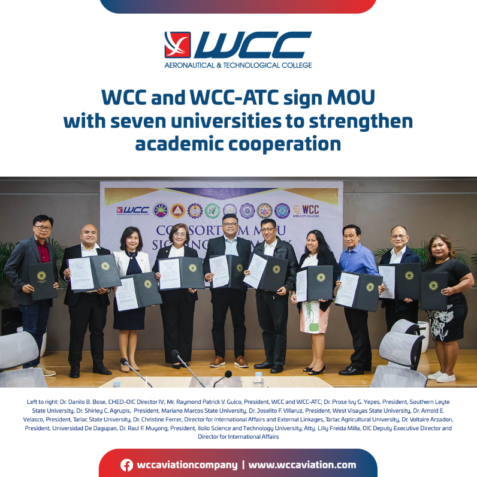

LATEST NEWS
WCC and WCC-ATC sign MoU with Seven Universities to Strengthen Academic Cooperation
Jun 17, 2022 @ 01:00 pm - 05:00 pm
World Citi Colleges (WCC) and WCC Aeronautical and Technological College (WCC-ATC) has signed a Memorandum of Understanding (MoU) with other Philippine Higher Education Institutions (HEIs) on June 10, 2022 at WCC-ATC Binalonan campus in Pangasinan.
WCC and WCC-ATC are partnering with seven of the country's top colleges and universities who have extensive and established reputations in specialized fields to strengthen academic cooperation and collaboration and provide the best student outcomes. Present during the signing were the HEI presidents of Mariano Marcos State University, Iloilo Science and Technology University, West Visayas State University, Southern Leyte State University, Tarlac Agricultural University, Tarlac State University, and Universidad de Dagupan. The MoU establishes a partnership agreement among the participating universities and colleges to promote academic exchanges for its students and faculty and strengthen academic collaborations to be of mutual benefit to their students, faculty, staff, and institutions.
Commission on Higher Education (CHED) representatives from the office of International Affairs Staff and Regional Office witnessed the consortium MoU signing ceremony which shows the office's strong support to the higher education institutions' collaborations.
Raymond Patrick V. Guico, president of World Citi Colleges and WCC Aeronautical and Technological College marked the event as the beginning of continued collective talks to encourage the development of exchange programs, student mobility, and provide mutually-beneficial access to the country's top education programs across a range of disciplines.
Partner linkages and internationalization are part of World Citi Colleges's thrust to foster mutually beneficial and enrich partnerships with educational institutions. Enrolling students to World Citi Colleges assure parents that their children get access to study abroad opportunities, connect with leading universities and colleges locally and globally, scholarship opportunities and training, network of global teachers, and professional development programs that are geared toward creating professionals who will make their mark in the world.
World Citi Colleges, with three campuses offering multi-disciplinary programs in the fields of allied health, health sciences, business, information technology, criminology, hospitality and tourism, has been providing excellent education for fifty years.
WCC Aeronautical and Technological College (WCC-ATC) is one of the best aviation schools in the Philippines and the only aviation school in the Philippines with its own airfield and complete aviation facilities.